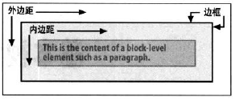

CSS假定每个元素都会生成一个或多个矩形框，这称为元素框。各元素框的中心有一个内容区。内容区周围有可选的内 边距、边框和外边距。

边框使用已定义样式生成，如solid或inset，边框的颜色使用border-color设置。如果没有设置颜色，将取元素内容的前景色。
注意：边框的宽度绝不能为负值。
每个元素都相对于其包含块摆放.
正常流：这是指西方语言文本从左向右、从上向下显示，这是我们熟悉的HTML文档的文本布局。
非替换元素：如果元素的内容包含在文档中，则称为非替换元素。例如：一个段落的文本内容都放在该元素本身之内，这个段落就是一个非替换元素。
替换元素：这是指用作为其他内容占位符的一个元素。替换元素的一个经典例子就是img元素，它只是指向一个图像文件。大多数表单元素也可以替换。
块级元素：这是指段落、标题或div之类的元素。这些元素在正常流中，会在其框之前和之后生成“换行”，所以处于正常流中的块级元素会垂直摆放。通过声明display:block，可以让元素生成块级框。
行内元素:这是指strong或span之类的元素。这些元素不会在之前或之后生成“行分隔符”，它们是块级元素的后代。通过声明display：inline，可以让元素生成一个行内框。
根元素：位于文档树顶端的元素。在HTML文档中，就是html元素